Figure 7
displays the end-to-end process for the definition of the RAN Architecture.
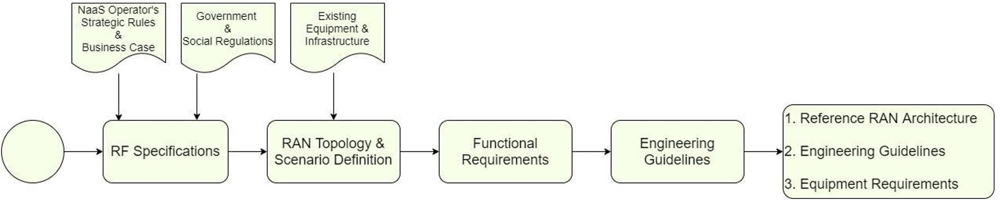
Figure 7. RAN Architecture E2E
process.
First step of
the definition process is to define the RF Specifications which
contemplate the selection of the operating band, guardband definition (in the
overlay case) and the maximum allowed transmitter power for all BTSs.
RAN Topology
& Scenario Definition section will guide the
selection of the BTS architecture, the deployment scenarios, the BTS type(s)
(Macro cell or Small cell) to be considered. It also provides guidance for the
evaluation of a Demarcation point between the RAN and the core network in case
NaaS Operator is not deploying its own core network.
Functional
Requirements will define the required network
functionalities based on RAN Sharing schemes and VoLTE if it applies.
Finally, the Engineering
Guidelines Definition section will provide the NaaS Operator instructions
on how to define engineering rules to be considered during the design process.
BTS operation is
conditioned to multiple parameters. These parameters are:
- Operating frequency band
- Guardband requirements (for
overlay scenarios)
-
Duplexing Scheme (which is
associated to the operating band)
-
Transmission power
These parameters
must be selected based on NaaS Operator service requirements, available
resources, and countrys policies and regulations.
In this section,
guidance for the selection of the mentioned parameters is provided.
3.1.1 Spectrum Definition
Electromagnetic
spectrum is a limited resource that is managed by a regulatory body in each
country. For this reason, the selection of an appropriate spectrum band and carrier
bandwidth depends on factors such as the country's regulatory policies,
spectrum fees, available spectrum chunks, MNO partners spectrum position and
unlicensed spectrum conditions.
In addition, for
Overlay scenarios it is necessary to set guard bands between LTE and existing
2G and 3G technologies in order to avoid interference between the co-located
systems and a degradation in the service.
Band Selection
NaaS Operator
can select its operating band based on one of the following considerations:
- Re-farming (OVERLAY
SCENARIO): LTE system can operate over existing 2G GSM and 3G UMTS bands
(e.g. Band 3: 1800MHz or Band 8: 900MHz) in overlay scenarios. As a result,
operators can re-farm parts of the spectrum currently used for 2G or 3G voice
and data services to support LTE. Spectrum re-farming is a cost-effective way
to increase capacity in existing networks without the need to bid for new
spectrum and by reutilizing infrastructure to overlay LTE. However, the only
way re-farming is feasible is when the NaaS Operator or its partners/customers
have enough contiguous spectrum (this means that the operating frequency band
has enough spectrum left to insert a new carrier) to allow simultaneous
operation of two or three technologies in a frequency band.
- Leverage from partners
spectrum: NaaS Operator can use the spectrum previously assigned to its partner
(in case partner has already been assigned a 4G band).
- Use an Unlicensed band:
Electromagnetic spectrum is a scarce resource that is regulated and assigned by
each country governmental institutions. However, the utilization of unlicensed
spectrum in the 5GHz range has been gaining interest in past years because it allows an operator to deploy LTE
services without the necessity of bidding for a licensed spectrum. On the other
hand, the use of unlicensed spectrum imposes transmission power limitations,
which limits coverage area of the BTS. In addition, NaaS Operator needs to
verify if other operations are using unlicensed spectrum in the area, as this may
cause a considerable amount of interference. NaaS Operator can find additional
information about unlicensed bands for LTE in
the Primer for LTE in Unlicensed Spectrum.
NaaS Operator must be aware that the operation
of LTE in unlicensed spectrum may not be supported by all user devices.
- Get Spectrum from government: NaaS Operator can
bid to be assigned an LTE band following country regulations. Moreover, some
countries around the world have been interested in facilitating unused spectrum
to service providers that are willing to bring mobile services to uncovered
populations (see Rhizomatica initiative). NaaS Operator can see if this same principle
applies in its own environment.
Spectrum bands
differ from each other in terms of their usage (for coverage or for capacity),
available bandwidth, clutter type (Rural Urban) and if they are paired (block
of spectrum in a lower frequency band and an associated block of spectrum in an
upper frequency band) or not.
From a usage
point of view, low frequencies (< 1GHz) provide extended network coverage at
lower cost as fewer base stations are required to achieve greater geographic
coverage. On the other hand, Higher frequencies (>1 GHz) are primarily used
to cover urban and suburban areas where data traffic is dense and substantial
network capacity is required (higher spectrum bands normally provide larger
bandwidths which allow for larger transmission rates). Figure 8 shows spectrum
bands usage from a coverage and capacity point of view.
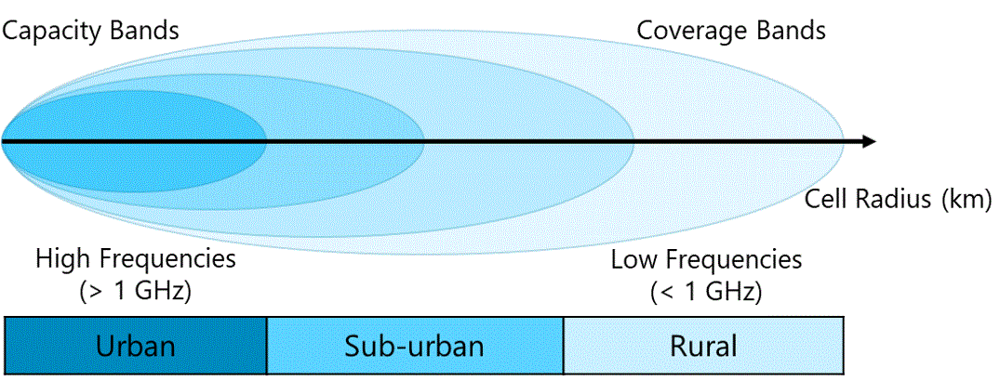
Figure 8. Coverage and Capacity
characteristics of spectrum bands.
NaaS Operator
can leverage on Table 3 to choose a band that best fits its business strategy.
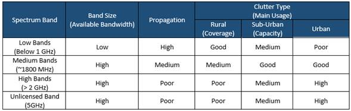
Table 3. LTE bands main characteristics.
LTE spectrum can
operate in a wide range of bandwidths: 1.4, 3, 5, 10, 15, or 20 MHz.
If the NaaS
Operator has the opportunity to select an specific LTE spectrum band for a
rural network deployment, it is recommended to aim for a low band (below 1GHz)
and a bandwidth that covers its present and future necessities in terms of
coverage and capacity.
Cell bandwidth
of 20MHz is often used in urban and suburban environments in which capacity is
the focus. However, having a 10MHz bandwidth can be a good tradeoff between
coverage and capacity performance. A 5MHz bandwidth can be useful to bring
connectivity to an uncovered population but will be limited in terms of
capacity performance. Having large bandwidths (e.g. higher than 20MHz)
introduces the possibility for a capacity expansion using a second carrier.
For instance, in
recent country-wide rural projects, most mobile network operators (MNOs) and
NaaS Operators have selected Band 28 700MHz and 10MHz cell bandwidth as this
combination has proven to perform good to provide rural coverage.
Guard band Requirements (OVERLAY SCENARIO)
One of the
important aspects when introducing the LTE system on top of existing systems
like 2G-GSM or 3G-UMTS is the guard band requirement. More specifically, when
LTE is co-located with other technologies in the same site where nearby
antennas or sharing scenarios are adopted then a guard band needs to be
maintained to avoid interference between collocated systems.
The guard band requirement can be
summarized as follows:
- In the case of co-located
LTE and GSM operating on the same band, then a single carrier of GSM 200 kHz is
enough to avoid interference between the two systems as shown in Figure 9.
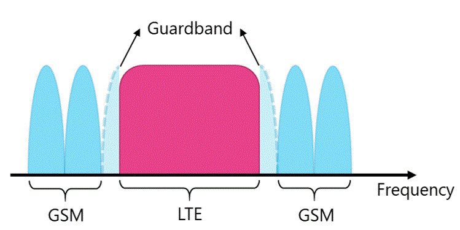
Figure 9. Guard band requirement
for collocated LTE and GSM systems in the same band.
- In the case of LTE co-located with another
system in a different band (e.g. LTE at 2.6 GHz and GSM 1800 MHz) then no guard
band is needed.
- In the case of co-located LTE and UMTS operating
on the same band, no guard band is required, however, both systems need to
deploy a strict filter on the RF power amplifiers to avoid interference.
- In the case of FDD-LTE co-located with TDD-LTE,
then half of the channel BW (whatever is higher between FDD and TDD) is needed
as guard band.
-
In the case where LTE is co-located
with another LTE system (from
another operator) in the same band, there is minimum to no interference due to
the orthogonal nature of LTE access scheme. For this reason, there is no need
for guard bands if adjacent technologies are FDD-LTE.
Table 4
summarizes the guard band requirement for LTE with different collocated
technologies.
|
Co-existing
systems
|
Required
Guardband
|
|
LTE band X + GSM band
X
|
0.2 MHz (One GSM
carrier)
|
|
LTE band X + LTE band
Y
|
0 MHz
|
|
LTE band X + UMTS band
X
|
0 MHz (RRU must
implement a strict RF filter to avoid interference)
|
|
LTE-FDD + LTE-TDD
|
Half of the channel BW
(the higher one)
|
|
LTE band X + LTE band
X
|
0 MHz
|
Table 4. Summary of guard band
requirements.
3.1.2 LTE Duplexing Scheme
Selection
LTE has two
schemes for resource sharing and achieve two-way communication (between the
eNodeB and the UE): Frequency Division Duplexing (FDD) and Time Division
Duplexing (TDD). FDD scheme uses one frequency for downlink (DL) and another
frequency for uplink (UL); allowing simultaneous communication between BTS and
UE. On the other hand, in TDD scheme both BTS and UE use the same frequency for
their transmissions, preventing simultaneous communication and implementing a
dedicated time slot for transmission (TX) and for reception (RX). Figure 10
shows the operation of FDD and TDD schemes.
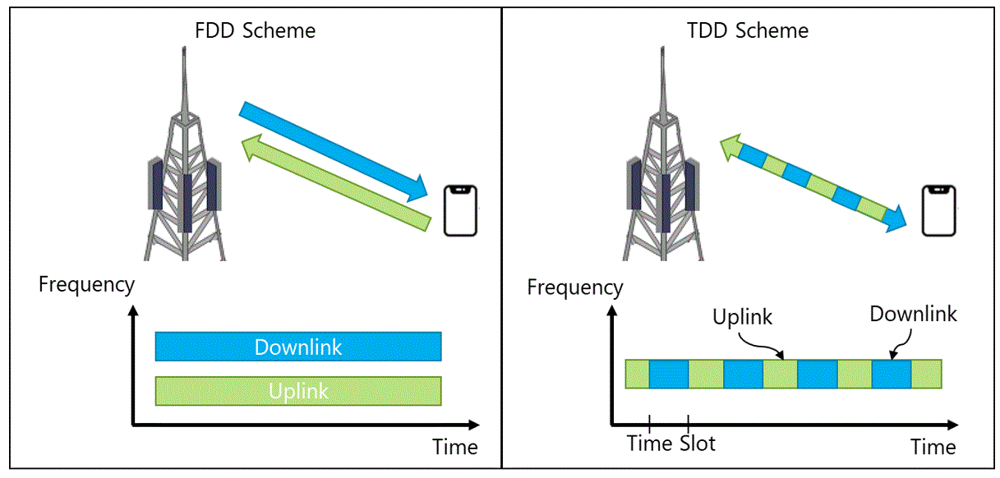
Figure 10. LTE Duplexing
Schemes.
NaaS Operator
must be aware that the Duplexing scheme also depends on the operating band. In
case the selected (available or allocated) frequency band differs from the
chosen duplexing scheme, NaaS Operator will be tied to work with the scheme
associated to that band.
Table 5 shows a
comparison of the FDD and TDD schemes from transmission rate, coverage, and
CAPEX performance points of view. NaaS Operator can use this criterion to
choose the scheme that best fits its service requirements.
|
Performance
Item
|
FDD
- LTE
|
TDD
- LTE
|
|
Transmission Rate
Performance
|
FDD allows higher throughputs.
|
Transmission rates cannot be achieved
at similar distances when compared to FDD. However, it allows the
implementation of advanced antenna techniques such as beamforming.
|
|
Site Count
|
Since FDD achieves cell edge
rates at farther distances, the number of sites required to serve a given
area is lower than TDD.
|
In a system comparison using the same frequency
band, the TDD system requires 31% more base stations than FDD when using a
1:1 (same number of RX and TX slots) and 65% more base stations when using a
2:1 (twice the amount of RX than TX slots) due to capacity constraints.
|
|
Spectrum Arrangement
|
FDD operation requires twice
more spectrum for a single LTE carrier for a given channel bandwidth.
|
TDD can operate in an unpaired
spectrum. In addition, it can also be suitable for asymmetric transmission
demands (like fixed wireless access deployments).
|
|
CAPEX
|
The fact that FDD requires fewer
BTSs to serve a specific area using the same frequency allows the NaaS
Operator to incur in lower equipment and infrastructure associated costs.
On the other hand, FDD spectrum
fees can make it a more expensive option.
|
Table
5. FDD vs TDD performance comparison.
3.1.3 Transmitter Power Definition
Together with
the operating band, the maximum transmitter power (per antenna port) is one of
the most important parameters to be considered previous to the design step. BTS
transmission power must be set based on the following considerations:
-
BTS Type There are no
formal rules to define the transmitter power of a BTS based on its Type (Macro Cell or Small Cell). Table
6 displays classification between BTS types based on the transmitter maximum
power.
|
BTS
Type
|
Radiated
Power
|
|
Medium Range (Small Cell) BTS
|
Up to 10W (40 dBm)
|
|
Wide Area (Macro Cell) BTS
|
There is no upper limit
for the radiated output power of a Wide Area (Macro Cell) BTS
|
Table 6. BTS classification based on transmitter power.
For the case of small cells, most equipment in
the market can achieve 10W (40 dBm) as maximum transmission power. In MORAN
scenarios (as will be discussed in section 3.3.1) a 10W small cell can allow
the implementation of two independent 5W carriers (one per Mobile Operator).
This rule should be always considered for small cell definition because
increasing the power with small transmitter heights has diminishing returns.
For transmit power ranges above 10W,
network design should consider a macro cell site for the design process.
Maximum power can be set according to the following point.
-
Tower height: As will be
detailed in the RAN HLD module, the higher the transmitter is from the ground,
the wider the coverage area achieved by the BTS (tower height consideration
does not have an important impact in small cells as these are usually located
in smaller infrastructure). In this sense, NaaS Operator can use this principle
to set higher transmitter power to those sites that will be placed on high towers in order to reach a
wider coverage area. Table 7 shows an example of how to define maximum allowed
transmitter power for macro cell sites according to transmitters height.
|
Transmitter
Height
|
Maximum
Allowed Transmit Power
|
|
< 10m
|
<= 10 W
|
|
From 10m to 20m
|
10W to 20 W
|
|
From 20m to 30m
|
20W to 30W
|
|
> 30m
|
>= 30W
|
Table 7. Tower height and Maximum Allowed Transmitter Power
relation example.
-
Local and regional
regulation NaaS Operator must consider that some regulations may exist in
certain regions preventing high transmit powers to be used. These regulations
are mandatory requirements to be followed by all operators in the region. For
instance: maximum allowed transmitter power for a certain region can be set to
30W. In this case, NaaS Operator must arrange its Transmitters Height vs
maximum allowed transmitter power considering the 30W limitation. NaaS Operator
must be aware of any local and regional regulations.
This section
guides NaaS Operator on its way to standardize the topology that will be
implemented on the RAN considering possible scenarios which include:
- D-RAN vs C-RAN Architecture.
-
Greenfield and/or Overlay
deployment.
-
Macro Cells and/or Small
Cells
-
Use of a Demarcation Point
between access and core network
3.2.1 D-RAN vs C-RAN Definition
As shown in Table
1, there are several tradeoffs that must be considered when selecting between
D-RAN and C-RAN. In addition, this selection will condition several aspects of
the overall network, mainly transport and core design and infrastructure.
Despite being a
promising solution in terms of performance management and future-proof, C-RAN
is feasible only in a reduced number of scenarios. Considering this, the
decision process of selecting between D-RAN and C-RAN can be reduced to the
following points.
- Number of coverage areas: Coverage areas can be
defined as towns or cities that will be covered. A C-RAN architecture wont be
efficient for a low number of coverage areas (less than 3).
- Separation between coverage areas: if there
exists a separation greater that 40 km between coverage areas, C-RAN
architecture is not feasible due to latency issues, making D-RAN the adequate
choice.
- Optical Fronthaul Network: C-RAN requires an
optical fronthaul network which comes with a high investment. In addition, the
length of the links must be below 40km for C-RAN sites to operate properly. C-RAN can only
be considered if NaaS Operator can afford the construction of a fronthaul
(fiber) network.
Methodology to
select between a D-RAN or C-RAN architecture is shown in Figure 11:
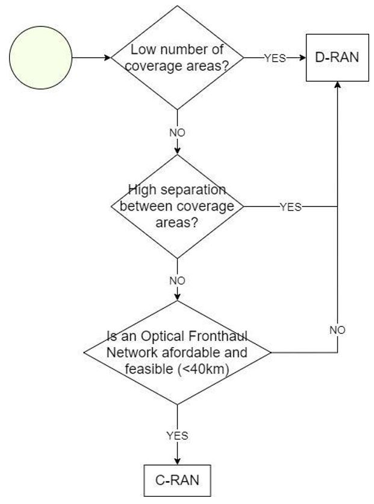
Figure 11. Methodology to select between a
D-RAN or C-RAN architecture.
3.2.2 Greenfield / Overlay
Scenarios Identification
NaaS Operator
can Identify its initial scenarios considering the following points:
- Greenfield site definition
No existing sites available.
-
Overlay site definition
NaaS Operator already has an existing operating network in the desired region
and all sites of the network have enough resources to support the addition of a
new RAT on them.
-
Greenfield + Overlay NaaS
Operator already has an existing operating network in the desired region,
however, only some of these sites have enough resources (available space on
tower and enough power supply for new equipment) to support the addition of a
new RAT. The remaining sites will need to be considered Greenfield ones.
Figure 12
displays a methodology to identify which are the initial scenarios in a NaaS
Operator environment. NaaS Operators network can be composed by a combination
of Greenfield and Overlay sites if conditions are met.
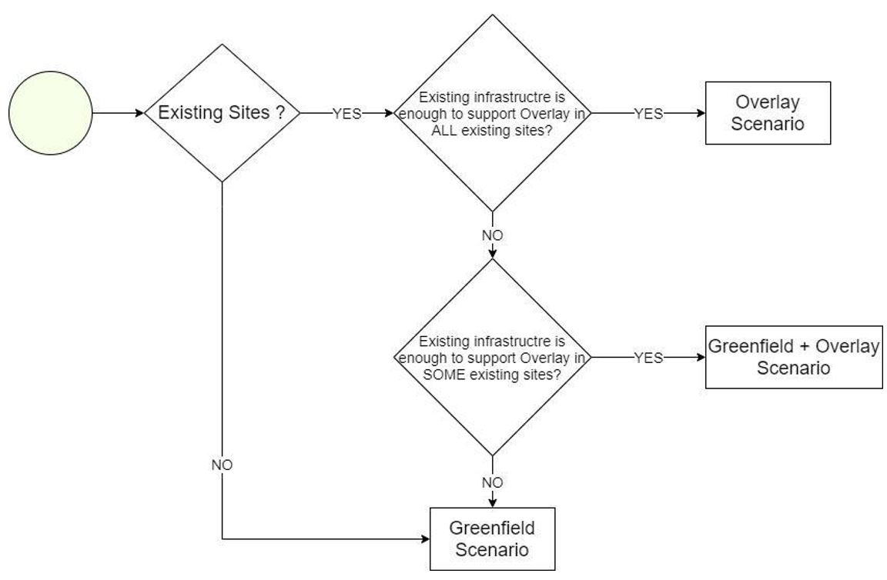
Figure 12. Methodology to select between
Greenfield and Overlay scenarios.
Existing sites
must be able to accommodate new infrastructure (BBU, RRUs or antennas) to be
considered as Overlay ones. This means that they must contain enough space on
the towers and power sources to install and feed the new equipment. A site
survey should be held in order to evaluate if existing sites are candidates for
an overlay deployment. The RAN HLD Module provides a questionnaire for the
evaluation of existing sites in order to define whether they can be used for an
overlay or not. This evaluation must be held by a site survey to the desired site.
Details for the site survey will be given in the Site Survey Module.
3.2.3 Macro / Small Cell Scenarios
Definition
The NaaS
Operator network can be composed of a combination of macro cells and small
cells. Table 8 displays a technical comparison between Macro Cells and Small
Cells.
|
|
Macro
Cell BTS
|
Small
Cell BTS
|
|
Main purpose
|
Coverage and capacity
|
Additional Capacity and
cover small targeted areas.
Can be selected if
Macro Cell BTS is too expensive.
|
|
Transmit Power
|
Up to 80W (depending
on equipment suppliers capabilities)
|
Up to 10W
|
|
Cell Coverage
|
~5 10 km
|
~2 5 km
|
|
Site Solution
|
BBU + RRU + Antenna
|
All-in-One equipment.
Integrated BBU and
RRUs (in some cases, antennas can also be integrated into the same box.
|
|
Antenna Configurations
|
2x2, 4x4 MIMO
|
2x2 MIMO
|
|
Installation options
|
Tall towers (10m
40m)
Rooftops
|
Small towers (up to
10m)
Lamp poles
Rooftops
|
Table
8. Macro Cell and Small Cell BTS technical comparison.
This
decision-making process of selecting BTS Types must take into consideration
several conditions ranging from technical, infrastructural and financial
constraints to population distribution and traffic behavior. The combination of
these conditions may raise the appearance of multiple scenarios that will vary
from one region to another. Table 9 displays a scenario definition based on
population classification.
|
Town
Size
|
Population
Density
|
Separation
between Towns
|
|
Small
|
Low
|
High
|
|
Small
|
High
|
High / Low
|
|
Big
|
Low
|
High / Low
|
|
Big
|
High
|
Low
|
Table
9. Scenario definition.
Multiple
scenarios may bring the necessity to consider a wide range of BTS Types and configurations.
However, in
order to have a homogeneous network (which will simplify future processes like
site catalog, network construction and maintenance, among others), NaaS
Operator can reduce all possible BTS configurations into a few options. While
having a low number of configurations might limit performance, it allows for a
cost-effective and easy operation of the network.
Naas Operator
can provide BTS configurations as shown in Table 10 to be considered for all
its network. Design team will decide (during the HLD process) which option best
suits a specific area.
|
BTS
Type
|
Number
of sectors per BTS
|
Tower
Hight
|
|
Small Cells
|
-
1 sector (omni)
|
Indistinct
|
|
Macro Cells
|
-
1 sector (directional)
(Only for highway
coverage)
|
Indistinct
|
|
-
2 sectors (directional)
|
10m to 20m
|
|
-
3 sectors (directional)
|
> 20m
|
Table
10. Number of sectors definition per BTS type.
3.2.4 Demarcation Point
Demarcation
point in a network divides it into two or more sections (depending on the
number of demarcation points). For instance, the S-GW acts as a demarcation
point between the RAN and the core network.
Demarcation
point in the RAN is required if the core network is not maintained/owned by the
NaaS Operator. The Demarcation point allows to have control over RANs
performance and to perform charging activities to its customers that are Mobile
Operators. If the deployment of a mobile core is considered as part of the
architecture, then, the demarcation point is the SGW or PDN Gateway. On the
other hand, if there are no plans for a mobile core, then a demarcation point
must be considered in the RAN.
The following
are some functionalities introduced by a demarcation point in the RAN:
-
NaaS Operator Independence:
Creates a logical separation between MNO and NaaS Operator network. This
enables the deployment, configuration, operation, and monitoring of sites
without depending on the MNO.
-
Security towards core
network: Provides a security layer that protects the core network.
Some demarcation
points that can be implemented in the RAN are:
- RAN Gateway for traffic
aggregation
This gateway (GW) improves management and
performance operations in multi-RAT or multi-MNOs scenarios. Additional
functionalities introduced by the RAN GW are:
- RAN Homologation: Abstracts the complexity of
multi-RAT solutions towards transport networks.
- Multi-vendor Support: Connectivity with
equipment from different network suppliers.
- Connection with 3er parties: Facilitates
interconnection of 3rd parties to the MNOs.
The RAN GW general concept is shown in Figure
13.
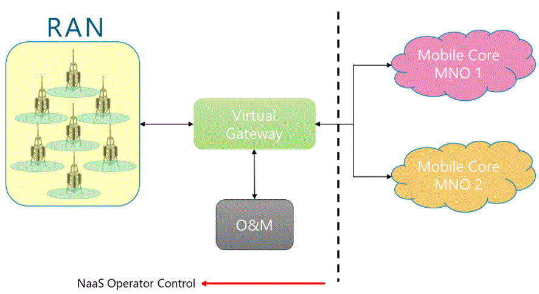
Figure 13. RAN Gateway concept.
- IPsec Gateway
An IPsec GW can be introduced to provide IPsec
tunneling termination towards RAN and towards core network, thus, improving
network security for all parties in the network. IPsec GW concept is displayed
in Figure 14.
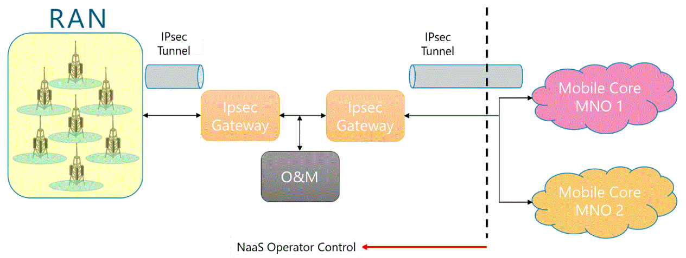
Figure 14. IPsec Gateway concept.
NaaS Operator must be aware that demarcation point functionalities
may vary from one equipment supplier to another.
This section
will guide the NaaS Operator in the definition of the RAN functionalities
required for the operation of the defined topology and service requirements
defined as part of the NaaS Operator business strategy.
3.3.1 RAN Sharing Scenarios
Definition
NaaS Operator
central strategy is to enable business to MNOs in new areas without them having
to invest on network infrastructure. Instead, MNOs can provide their network
services using NaaS Operators infrastructure and network resources.
NaaS Operator
can provide its RAN infrastructure to multiple MNOs based on the following
sharing schemes:
- Multi-Operator RAN (MORAN):
This scheme allows to share BBUs between MNOs but not radio carriers (RRUs are
not shared). This implies that every MNO will serve its subscribers in its own
spectrum chunk.
- Multi-Operator Core Network
(MOCN): This scheme allows all elements in the RAN (BBUs and RRUs) to be
shared. The difference is that MOCN allows radio carriers to be shared too
which makes MOCN to be the most resource efficient. Moreover, MOCN can be
deployed quickly as it only requires the feature to be configured in the RAN.
This makes MOCN ideal as a solution for quick coverage expansion. By activating
MOCN on an existing network, subscribers from a new MNO customer can get access
to the NaaS Operator network. Mobile cores of the various MNOs using the NaaS Operator network are
independent.
- Roaming Agreements between
NaaS Operator and MNO: In this scheme no RAN resources are shared. Instead,
NaaS Operator owns the RAN and the core network and redirects traffic to MNOs
core networks. In this case, the user might have to enable roaming on their
phone to access the NaaS network.
NaaS Operator
can use Table 11 to decide which sharing scheme best fits its strategic plans.
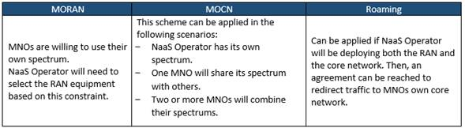
Table 11. RAN Sharing
application schemes.
Figure 15
illustrates the implementation of each RAN sharing scheme.
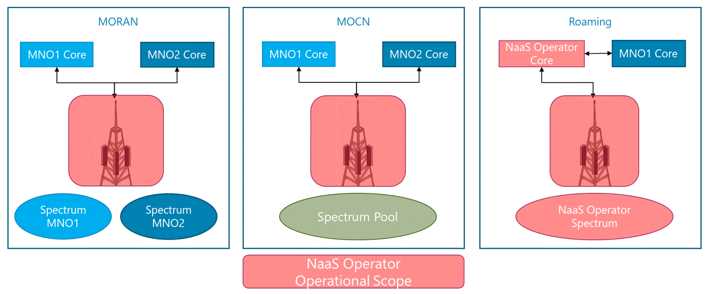
Figure 15. Possible RAN Sharing Schemes.
Table 12
summarizes technical characteristics of each scheme.
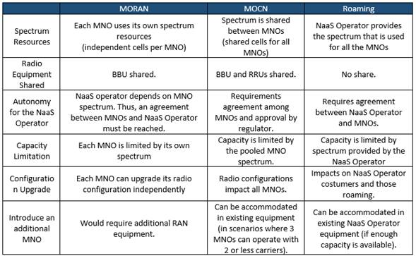
Table 12. RAN Sharing
schemes characteristics.
3.3.2 VoLTE Implementation Evaluation
Voice over LTE
(VoLTE) is the 4G-LTE solution to provide voice services in an LTE network.
VoLTE provides high-quality voice and video services. However, this section
only applies if at strategy level the NaaS Operator has decided to provide
voice services.
The
implementation of VoLTE on a network brings the following requirements:
- Integration of an IP
Multimedia Subsystem (IMS) on the core structure as standard EPC is not able to support VoLTE on its own.
Possible strategy is to reach an agreement with MNO(s) in order to redirect
traffic from NaaS Operators core network to MNOs IMS or from NaaS Operators
RAN to MNOs core network (which includes an IMS).
- Additional RAN
functionalities (that will be detailed in section 3.3.3) that are basic for the
operation of VoLTE in the air interface.
These
requirements represent an addition to the networks CAPEX, increasing NaaS
Operator investment. Additionally, the configuration of VoLTE on a BTS means
extra integration efforts.
However, NaaS
Operator can avoid the implementation of VoLTE if LTE BTSs are deployed as an
overlay in locations where existing 2G and/or 3G sites are already operating.
Voice in overlay scenarios can be carried by the existing RATs using the
Circuit Switched FallBack (CSFB) functionality which allows an user equipment
(UE) connected to the LTE system to move to 2G-GSM or 3G-UMTS in order to
complete the voice communication. Once the voice call is over, the UE returns
to LTE. CSFB principle is shown in Figure 17.
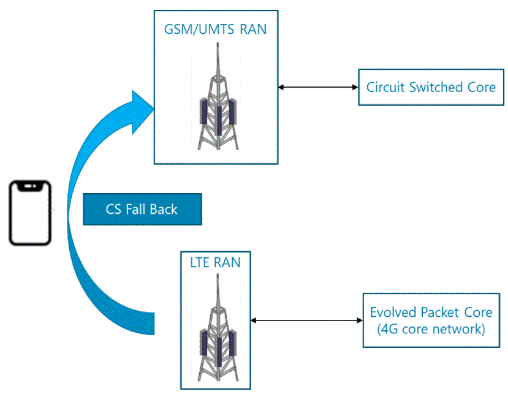
Figure 16. Circuit Switched FallBack principle.
For these
reasons, the implementation of the CSFB functionality is preferable from
financial and sites configuration points of view. However, CSFB principle does
not apply in cases where there are no existing sites operating with 2G and/or
3G. In other words, VoLTE is the only option to provide voice services on
Greenfield Scenarios.
Figure 17
displays a strategic criterion to guide NaaS Operator in the decision-making
process of deploying VoLTE:
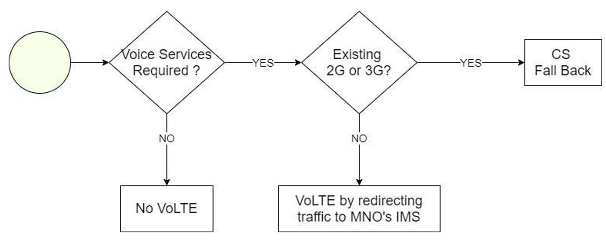
Figure 17. VoLTE decision-making process.
3.3.3 Equipment Requirements
Definition
Network
equipment chosen for the deployment of the RAN must be able to support the
selected architecture that has been established up to this point and will
depend on the BTS Type: Macro Cell or Small Cell.
In addition, RAN
features must be considered too in order to allow the implementation and
operation of the defined RAN Architecture and functional requirements that have
been established up to this point.
Table 13
summarizes equipment requirements and RAN features required based on defined
RAN Architecture requirements.
NaaS Operator
can use the RAN Equipment Requirements Template to
create its own version.
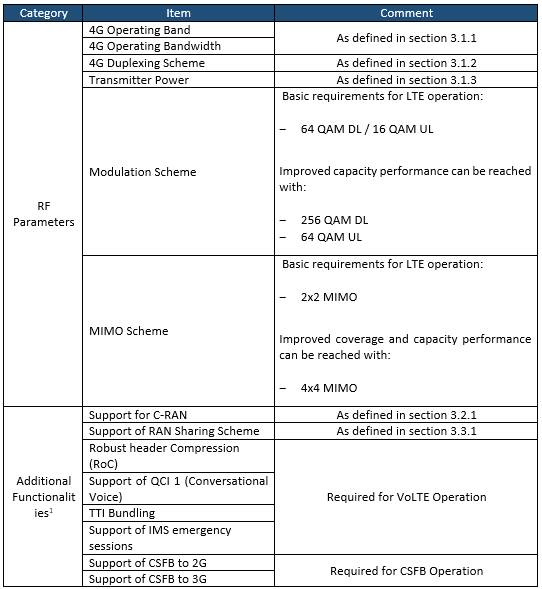
Table 13. Equipment requirements
based on RAN Architecture specifications.
Engineering
Guidelines are a set of rules that need to be followed during the High-Level
Design (HLD) Process. Engineering Guidelines must be set according to the defined
RAN Architecture and should cover the minimum requirements for the network to
operate as desired. Network designer will establish site configurations based
on the given rules. These rules cover Radio (coverage and capacity) as well as
Infrastructure aspects of the network.
NaaS Operator
can use the e the Engineering Guidelines Template to
set the engineering rules to be considered during the HLD process. Recommended
values will be given for each parameter as a starting point for the NaaS
Operator.
3.4.1 Coverage & Capacity
Guidelines Definition
Guidelines for
the radio aspects of the network include parameters that must be considered
during network dimensioning. Table 14 summarizes the required Coverage and
Capacity parameters that must be set before the HLD process (additional
parameters will be introduced and explained in the RAN HLD Module).
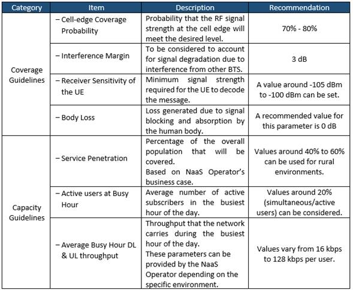
Table 14. Description of
Coverage and Capacity engineering rules categories.
3.4.2 Infrastructure Guidelines Definition
Guidelines for
the infrastructure aspects required to build site configurations during the HLD
process. Table 15 summarizes the categories of the infrastructure engineering
rules:
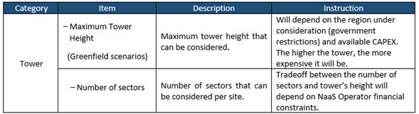
Table 15. Description of
Infrastructure requirements categories.
A RAN Architecture
report must be elaborated in order to provide a clear image of the overall
network and engineering guidelines to the design team. Additionally, equipment
requirements can be considered for the RFx process.
The report must
cover all points and considerations that define each BTS in the RAN and its
main functionalities. Such points are:
- Reference RAN Architecture Defined overall RAN
architecture.
- RF Specification
- Band and Guard band
- Transmitter Power
- RAN Topology and Scenarios
- BTS Architecture and Type
- Deployment Scenario
- Demarcation Point
- Functional Requirements
- RAN Sharing Scheme
- Voice Services Implementation
- Equipment and Functionalities requirements
- Engineering Guidelines
- Coverage, capacity, and
infrastructure rules to be considered during the design process.
NaaS Operator
can use the RAN Architecture Report template as
a reference to create its own version.
Table 16 illustrates
the supported bands Frequency Division Duplex (FDD) LTE while
Table 17 illustrates
bands for Time Division Duplex (TDD) LTE according to the 3GPP.
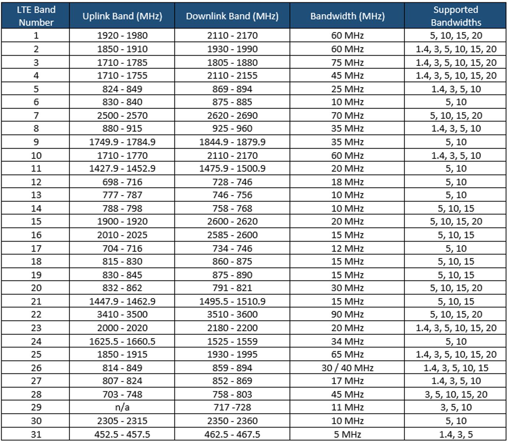
Table 16. FDD-LTE 3GPP Bands.
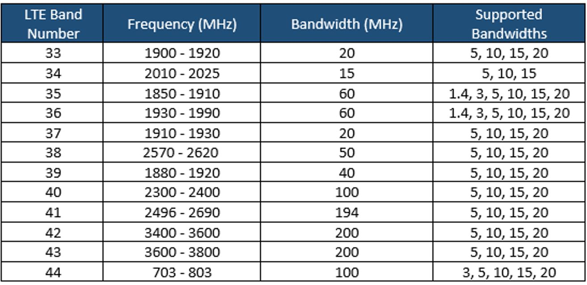
Table 17. TDD-LTE 3GPP
Bands.